Beauty Dollz (DressGame)
Interface & Gameplay
 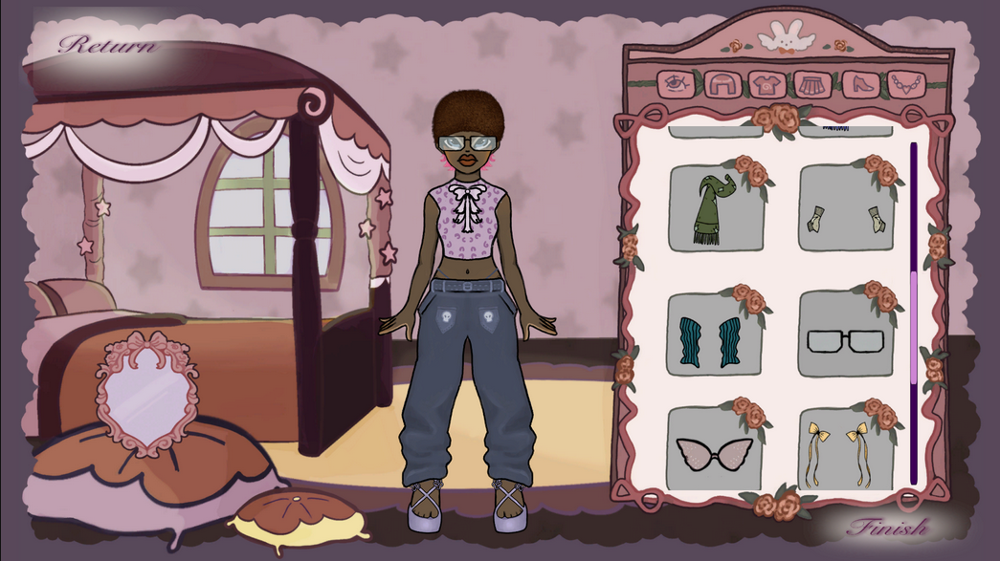
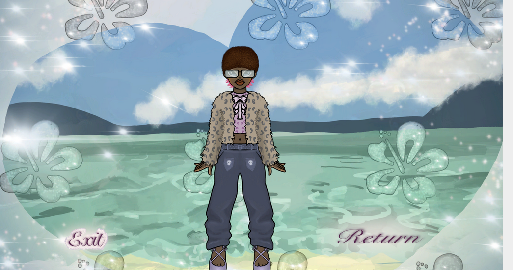
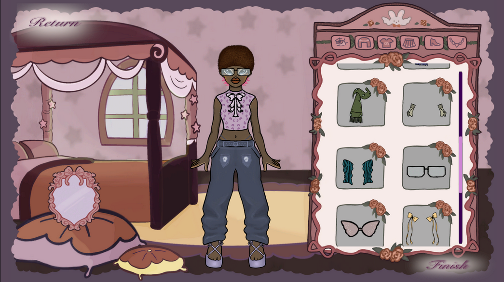
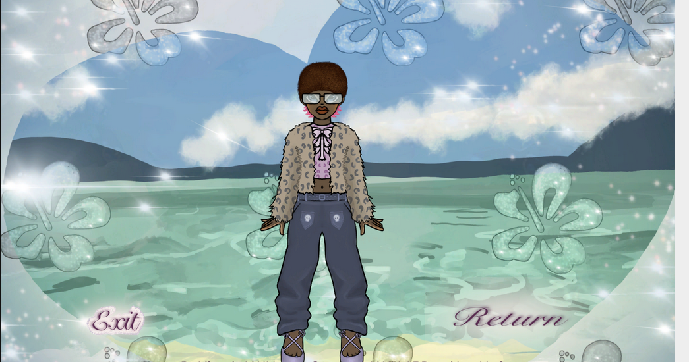
Contexte : Développement d'un jeu de personnalisation d'avatar (Dress-Up).
Réalisations : En charge de toute la partie visuelle et de l'intégration UI. J'ai illustré les décors et les costumes sur Procreate. J'ai ensuite assuré le scripting C# pour rendre les boutons et le système d'inventaire fonctionnels.
🔗 Jouer sur Itch.io 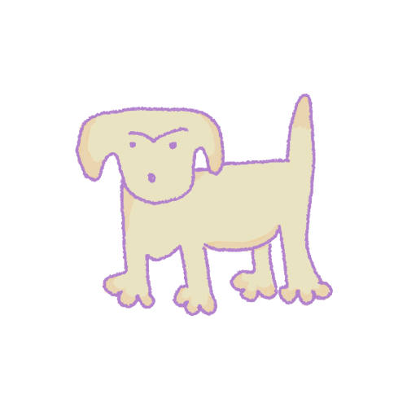
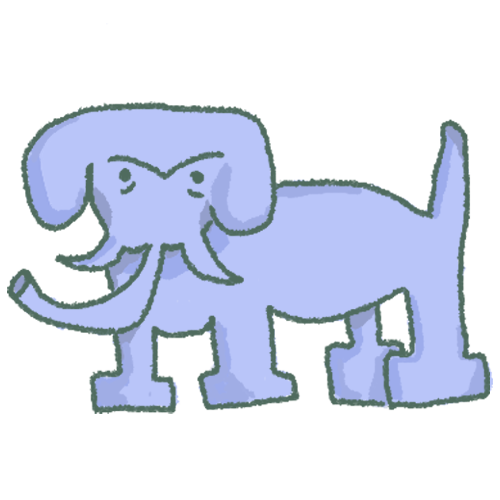
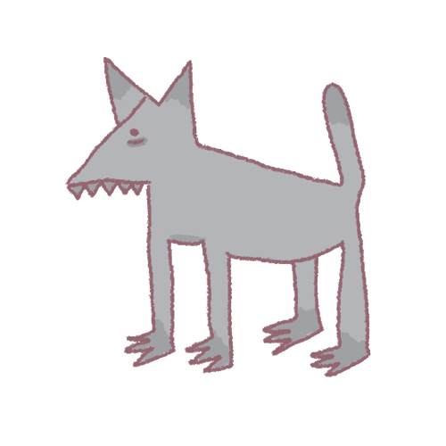
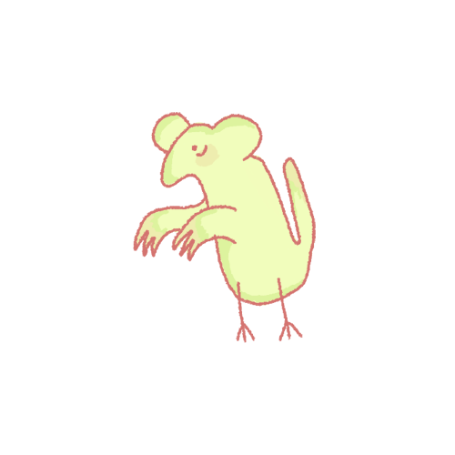
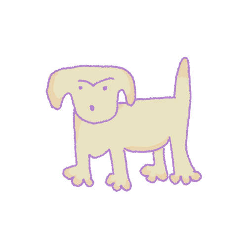
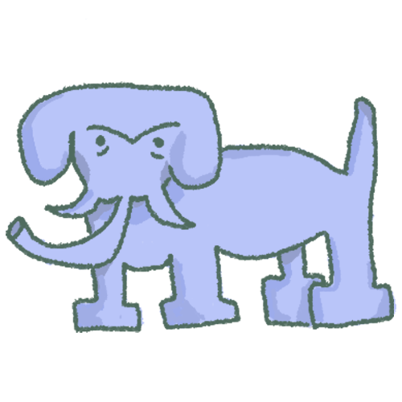
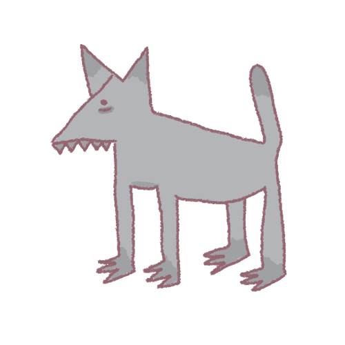
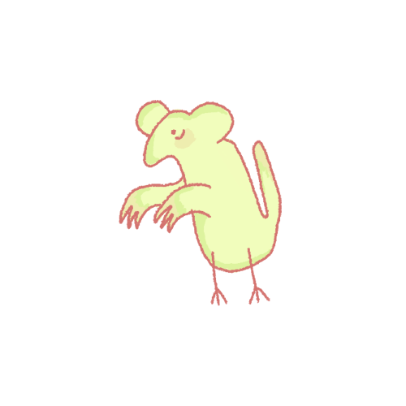